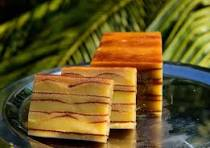
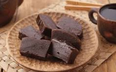
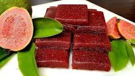
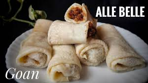

Introduction to Goan Sweets
Goan sweets, or **"Goan Desserts"**, are an integral part of the state's culture and festive celebrations. They reflect a unique blend of Portuguese and local Hindu culinary traditions, often featuring ingredients like **coconut, jaggery, rice flour, and semolina.**
Many traditional sweets, known as *"khas*," are prepared especially for festivals like Christmas and Ganesh Chaturthi, offering a sweet glimpse into Goa's vibrant history.
Popular Goan Delicacies

Bebinca (The Queen of Goan Desserts)
A quintessential Goan layered cake, often called the **'Queen of Goan Desserts'**. It's traditionally made with **coconut milk, sugar, eggs, and plain flour**, and baked layer by layer (usually 7 to 16 layers) to achieve its characteristic texture. It's a must-have during Christmas.

Dodol
A soft, dark, toffee-like pudding. **Dodol** is prepared by slow-cooking **coconut milk, jaggery (palm sugar), and rice flour** for several hours until it thickens into a glossy, fudge-like consistency. Its color comes from the dark palm jaggery used.

Perad (Guava Cheese)
Despite its name, **Perad** is a sweet, firm jelly or cheese made from **guava pulp and sugar**. It's firm enough to slice and is often served with crackers or bread. It's a popular homemade treat and a testament to the local fruit abundance.

Alle Belle
A type of Goan pancake or crêpe roll. The thin pancakes are made from flour and stuffed with a delicious filling of **fresh grated coconut and palm jaggery (known as 'gudd')**. It's a simple, comforting dessert.